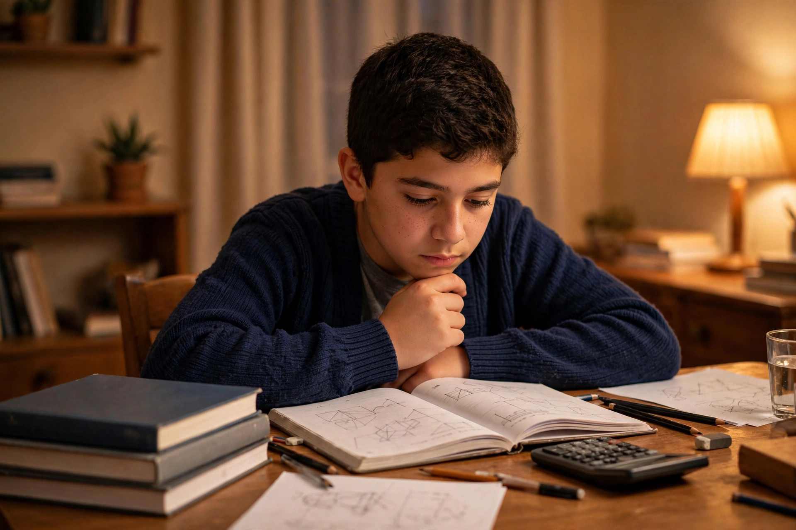
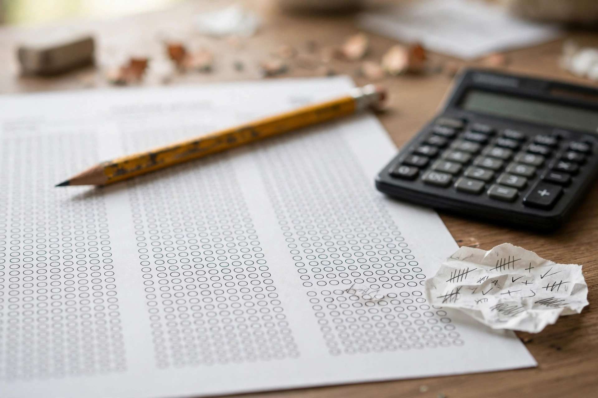

LGS'ye girerken en önemli belge sınav giriş belgesidir: olmadan sınava alınmazsınız. Belge sınavdan yaklaşık bir hafta önce yayımlanır ve okul müdürlüğünüzden ya da e-Okul üzerinden alınır. Bu rehberde giriş belgesini nasıl alacağınızı, sınav günü yanınızda nelerin olması gerektiğini ve hangi kurallara dikkat etmeniz gerektiğini adım adım anlattık.
Sınav giriş belgesi, sınav tarihinden yaklaşık 7 gün önce MEB tarafından yayımlanır. Belgenizi e-Okul VBS üzerinden indirebilir ya da okul müdürlüğünüzden alabilirsiniz. Belgede sınav yeriniz, salon numaranız, sıra numaranız ve sınavın başlama saati yazar. Belgeyi alır almaz sınav yerini mutlaka kontrol edin: eğer adres size uzaksa, sınavdan önce bir kez yolu görmeniz sınav sabahı kaybolmanızı engeller. Belgenin çıktısını alırken fotoğrafınızın net göründüğünden emin olun; bulanık fotoğraflı belge sorun çıkarabilir.

Sınav günü yanınızda mutlaka olması gerekenler: sınav giriş belgesi, geçerli bir kimlik belgesi (nüfus cüzdanı ya da kimlik kartı) ve en az iki adet koyu uçlu kurşun kalem, silgi ve kalemtıraş. Saat takmak serbesttir ancak akıllı saat yasaktır. Su şişesi şeffaf olmak şartıyla salona alınabilir. Cep telefonu, akıllı saat, kulaklık ve hesap makinesi kesinlikle yasaktır; bu cihazlarla salona girmeniz sınavınızın iptaline yol açabilir. Telefonunuzu evde bırakmak en güvenli yoldur.
Sınav sabahı sınav yerinizde en az 30 dakika önce olun. Kapılar sınav başlama saatinden 15 dakika önce kapanır ve geç kalan adaylar salona alınmaz. Sınav iki oturumdan oluşur: sözel bölüm sabah, sayısal bölüm öğleden sonra. Oturumlar arasında yaklaşık 45 dakikalık bir ara verilir; bu arayı dinlenerek ve hafif bir şeyler atıştırarak geçirin. Sınavdan önce son bir kez LGS puan hesaplama aracıyla hedeflediğiniz netleri kontrol edebilir, böylece hangi dersten kaç net yapmanız gerektiğini net olarak görebilirsiniz. Ayrıca devlet lisesi için kaç puan gerekir sayfasına bakarak hedef okulunuzun taban puanını öğrenin.

Optik formu doldururken kitapçık türünüzü doğru işaretlediğinizden emin olun; yanlış işaretlenen kitapçık türü puanınızı doğrudan etkiler. Cevapları önce soru kitapçığına, sonra toplu olarak optiğe geçirmek zaman kazandırır ama son 10 dakikayı mutlaka optik kontrolüne ayırın. Bilmediğiniz soruları boş bırakın: yanlış cevaplar doğru cevapları götürür (3 yanlış 1 doğruyu götürür). Sınav bitmeden salondan çıkamazsınız; ilk 30 dakika ve son 15 dakika içinde çıkış yasaktır.
Sınav giriş belgesi ve sınav günü kuralları, sınavın kendisi kadar önemlidir: küçük bir ihmal bir yıllık emeği boşa çıkarabilir. Belgenizi erken alın, sınav yerini önceden görün, yasaklı cihazları evde bırakın ve sınav sabahı erken gidin. Hazırlığınızı tamamladıktan sonra puan hesabınızı yapıp hedefinizi netleştirin, sonra sakin bir şekilde sınava girin.